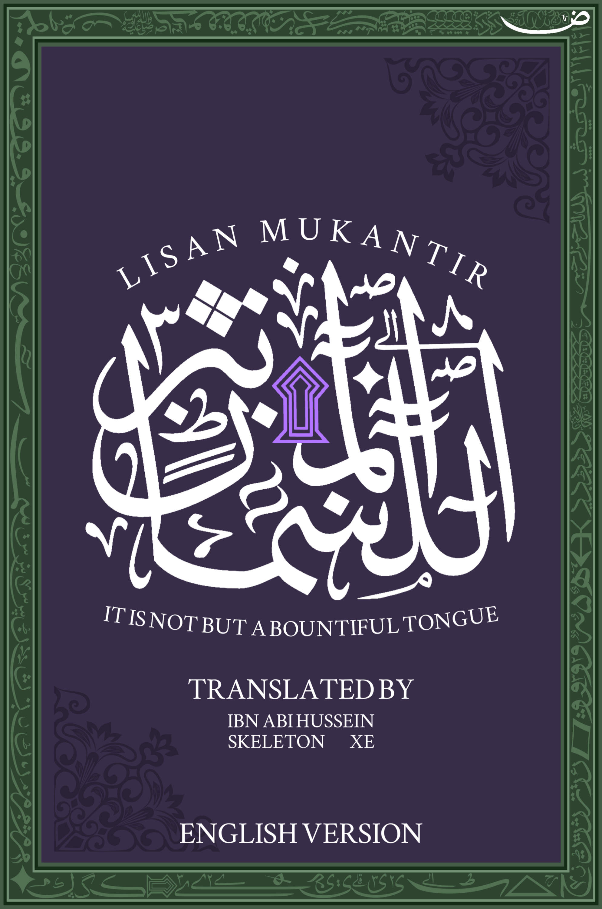
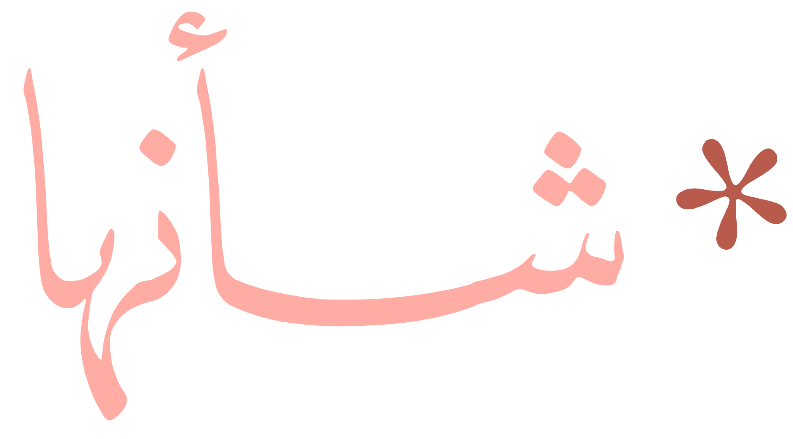

تُعنى مكتبة دُرَر الضّـــاد بجمع الكتب الكنتــــــرية وترجمتها لتبلغ رسالة الكنتــــــــــــرة أطْورَي العالمــين أجمعـــــــــين. أسّسها العلّامة الفاضل ابن أبي حسين الأسدي الكنتري الذي بالغ بعظــــــــيم الجهد وأبى إلا أن يتكنتـــر كل امــرئٍ من كــــل أمّــــةٍ وأرضٍ وبــــلادٍ وعـــــالمٍ.
الموسوعة الجنانية في جمع أخبار عالم الجنان ومعارفه وآثاره والتفصيل فيها وفي علومه.